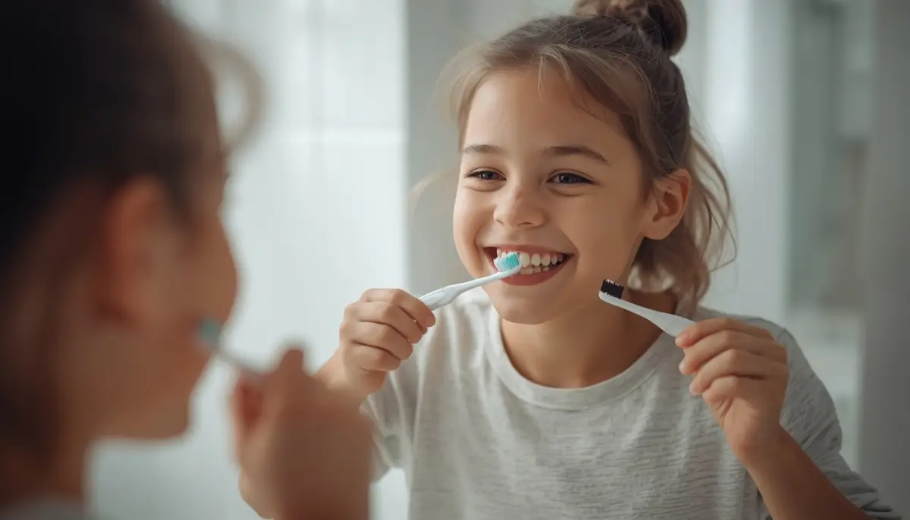

El ritual diario del cepillado dental en familia
Convertir el cepillado dental en un momento agradable y compartido en el hogar resulta fundamental para que el niño lo interiorice como un hábito natural. Desde la aparición del primer diente, el uso del cepillo adecuado y la cantidad correcta de pasta dentífrica con flúor (según las recomendaciones actuales de odontopediatría) garantizan una protección eficaz frente a las bacterias.
Dosis de pasta fluorada y técnica adaptada a la edad
Para los menores de tres años se recomienda una cantidad equivalente a un grano de arroz de pasta con al menos 1000 ppm de flúor; a partir de los tres años, la cantidad puede incrementarse hasta el tamaño de un guisante con 1450 ppm. Es importante que los adultos supervisen y repasen el cepillado hasta los ocho años, ya que los niños aún no poseen la destreza motora fina necesaria para limpiar todas las superficies dentales de forma autónoma.
"El cepillado en familia no es una obligación rígida, sino un ritual de juego y complicidad que enseña al niño a cuidar de su propia salud."
Claves prácticas para hacer el cepillado divertido y constante
Integrar el hábito diario sin conflictos ayuda a que el menor disfrute del momento del baño y la higiene:
1. Usar canciones o juegos de imitación: Cepillarse los dientes junto al niño frente al espejo para que imite los movimientos de manera lúdica.
2. Establecer la frecuencia correcta: Asegurar al menos dos cepillados diarios, siendo el de antes de dormir el más importante debido a la reducción del flujo salival nocturno.
Construir una higiene sólida en el hogar
Con constancia, paciencia y un enfoque lúdico, el cepillado dental se consolida como una rutina más del día a día, protegiendo la sonrisa infantil con total naturalidad.
➔ Volver al índice de Salud bucodental